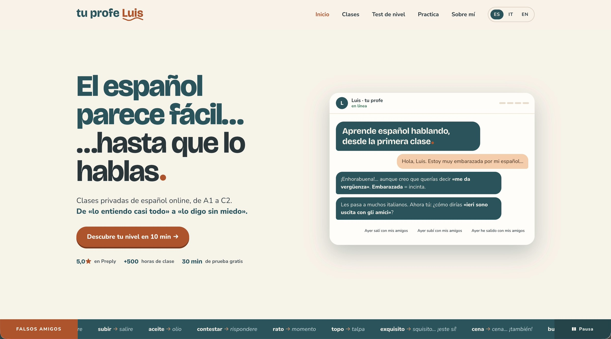
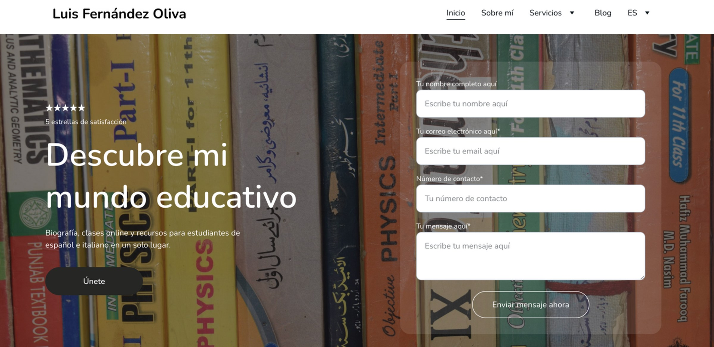
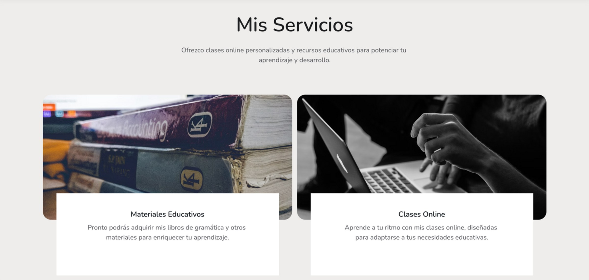
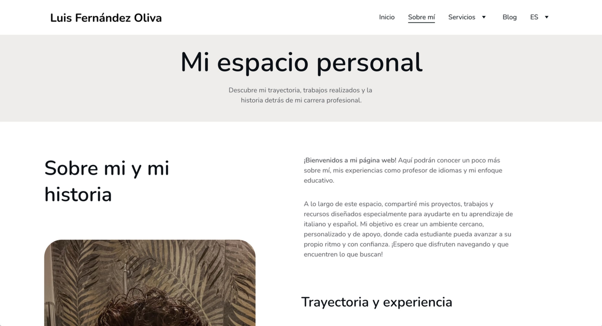
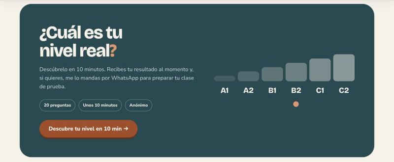
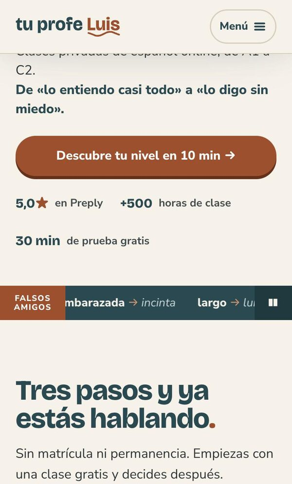

tuprofeluis
A website for my Spanish lessons, designed around one fear: speaking a new language out loud.

Screen recording of the home page: the headline El español parece fácil… hasta que lo hablas is typed letter by letter, then a chat window opens with a short conversation between a student and Luis.
The first sixteen seconds of the home page, recorded on a laptop.
My old site was a Hostinger template: correct, but anonymous. Nobody could tell who I was or how I teach.
A site that behaves like a first lesson: it speaks Spanish, shows the typical Italian mistakes and answers like a peer, not a strict teacher.
More visits to the page and more people writing to ask about lessons.
A template that could belong to anyone
Most of my students are Italian. Spanish feels close to them, so they understand a lot from the first weeks. Then they have to speak, and they freeze. The old site said none of this: a Hostinger template with a generic photo of textbooks, a contact form and the line "Descubre mi mundo educativo".

Before · the old home page, built on a Hostinger template.

After · the new home page, designed and coded by me.
What wasn't working
Before rebuilding, I went through the old site section by section and wrote down what was failing.
In three seconds you couldn't tell who I was, what I teach or how I could help you.
It looked like a landing page for an online course: a form asking for your phone number before giving you any reason to write. No face, no voice, just a dark photo of textbooks.

Two vague cards that didn't really say what I offer.
One of them promised teaching materials that weren't available yet: a card you couldn't click, for something you couldn't buy.

Formal and distant. The way I actually teach, warm and playful, didn't come through.
The page opened with a generic title, "Mi espacio personal", and you had to scroll to find me.
What was missing was the one thing that makes me different: I speak both languages, so I know exactly where Italians get stuck. That became the core of the new site. The false friends, the chat and the headline all come from it.
El español parece fácil… hasta que lo hablas.
Spanish looks easy… until you speak it.
The headline names the problem my students live, in their own words. It is the part of the language that is hardest to unlock, so the site starts exactly there.
Three choices that make the site feel like a person
A chat, not a sales pitch
The first thing you meet is a conversation. Luis answers like a peer who corrects you with a smile, not like a distant teacher. The very first exchange is a classic mistake: an Italian student says embarazada meaning "embarrassed", and finds out it means "pregnant".
The goal is to lower the fear of speaking before the first lesson even starts.
False friends, everywhere
I speak Italian every day, so I know which Spanish words trick Italians. A strip of false friends runs under the hero, with a pause button, and free exercises go deeper.
Try a few below: they are the same words my students get wrong.

A level test before the first call
Ten minutes, twenty questions, anonymous. You know where you stand before talking to me, and the first lesson starts from there.
Would an Italian get these right?
Each card shows a Spanish word. Turn it to see what an Italian thinks it means, and what it really means.
The same voice, in a hand
On a phone the chat moves below the headline, the menu folds into one button and the false friends keep their pause control. The call to action stays wide and easy to reach with a thumb.
Accessibility already in place
- A "skip to content" link
- A pause button on the moving strip of false friends
- The whole site in Spanish, Italian and English

People write before they book
Since the new site went live, the page has more visits and more people contact me to ask about lessons. The site does part of the first conversation for me.
Next step: measure visits and enquiries over time, to replace impressions with numbers.
Looking at it again, with fresh eyes
- The headline and the false friends are written twice in the code, for the animation. A screen reader reads them twice: they should be read once.
- The star in "5,0★" is read as a symbol. It should say "5 out of 5 on Preply".
- The email address is plain text. It should be a link, and easy to copy.
- I need real numbers on visits and enquiries, not only my impression.